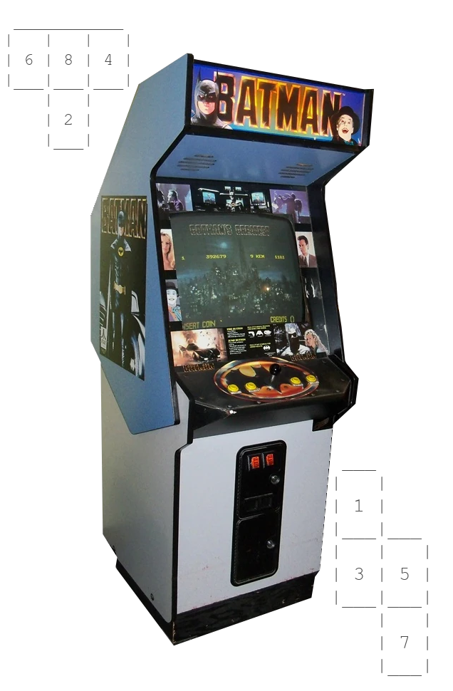
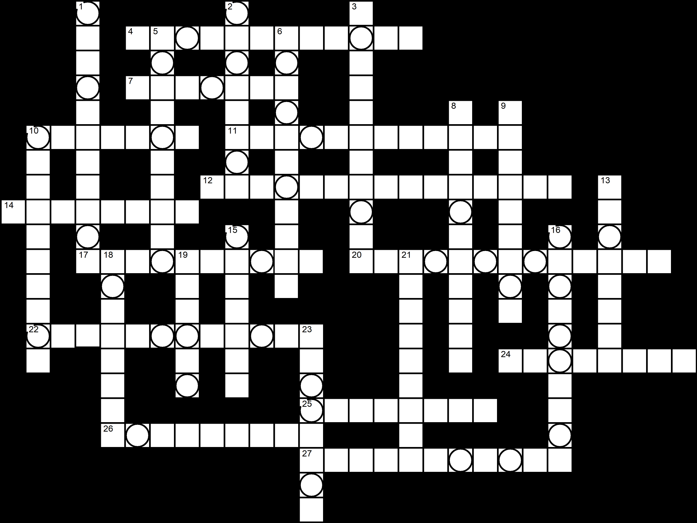

Drum roll please! Our next number features the Caped Crusader!
But riddle me this Batman - How do you expect to make it back from Arkham without losing your pants?

| Across | Down | |
|---|---|---|
| 4. Weapon crafted from Aphrodite's Magic Girdle | 1. Protype military exosuit used by Skyrocket | |
| 7. Deadliest poison in the universe; once used by Alek Korlo to poison members of the Legion of Super-Heroes on Brainiac 5's birthday | 2. Hawkman's flight vessel which combines the innovations of Rann with the mechanics of Thanagarian engineering | |
| 10. Tool created by Arion by drawing some of the Life Force from Poseidon's Trident | 3. Staff used by Dr. Ub'x | |
| 11. Mjölnir | 5. This protective gear gives Reggie Meyer his enhanced powers | |
| 12. Created after the 5-year war to provide power to Old Earth from geosynchronous orbit | 6. A device created by Desaad to evoke horror in it's target's brain | |
| 14. Secret device used during the Alien Alliance's invasion of Earth to disable the powers of metahumans | 8. A weapon built by Kalibak capable of destroying planets and absorbing their energy to restore Apokolips | |
| 17. The source of power for Science Hero Thoth | 9. A crystal used by Dr. Fate to learn about dangers and the unknown | |
| 20. The first battery and ring that harnessed the green light of willpower for offensive capabilities | 10. A drone-like device used to protect Khundian warships | |
| 22. A mystical object once belonging to Queen Hatshepsut, it is the source of Adrianna Tomaz's powers | 13. The power source of the the Gold Bug | |
| 24. Element discovered by T.T. Turnbull from a meteorite; used to create the Thunderbird Robot's wings | 15. An radioactive element native to Krypton, named after the Kryptonian Lord of the Sky | |
| 25. Throwing weapon used by Gotham City vigilante Batman | 16. An alternate form of matter comprised of antiparticles. | |
| 26. Hallucogenic drug originally designed by Theodore Gavlin to repair damaged brain tissue | 18. With 21 down, a treasure from lost Camelot; eventually captured by Sheeda Queen Gloriana | |
| 27. Weapon created by Hephaestus and set loose on the civil war in Kaznia; it drew its power from violence | 19. A sentient sickle-shaped blade capable of attaching to and posessing its wielder | |
| 21. See 18 down | ||
| 23. A divine blade created by Hepheastus from the Eighth Metal for Apollo |
./WelcomeToTheArcade/TheOtter/FirstIce/WittyCat/PureBeet/???
(Note: unless otherwise specified, all multi-word answers will use CamelCase in URLs)